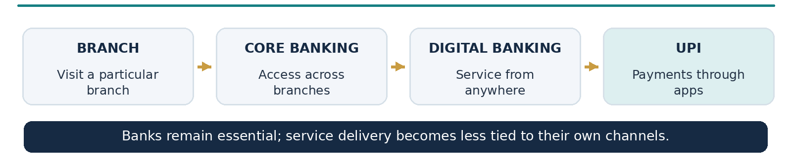
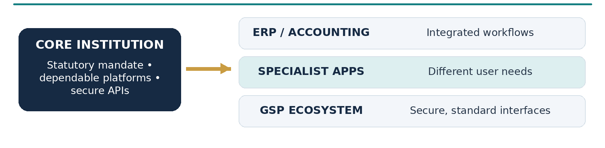
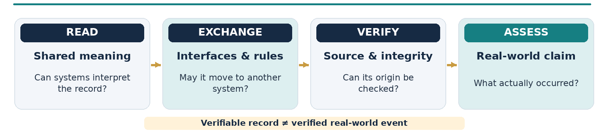
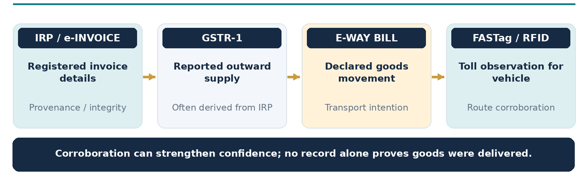
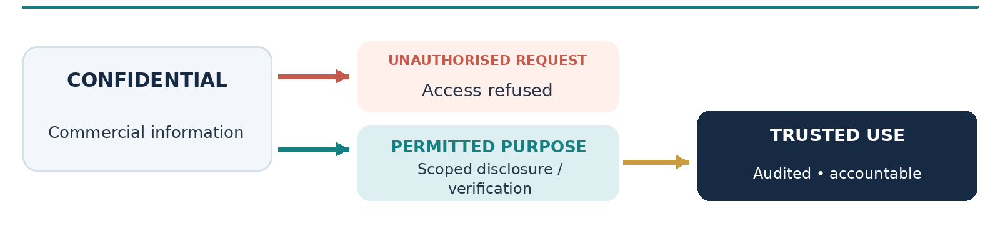
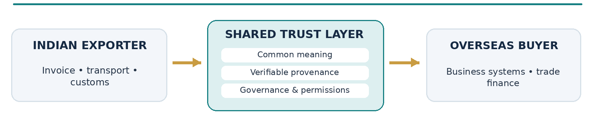
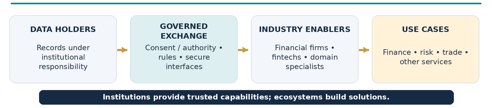
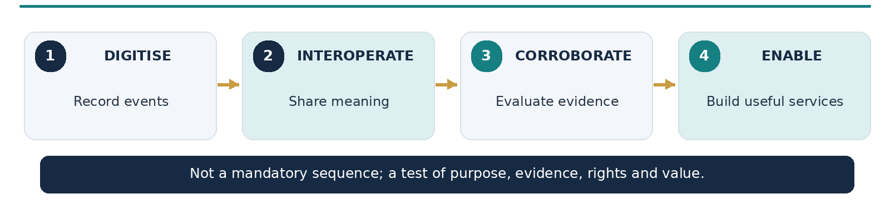

Context: SamvAAd 2026, Sahamati’s India Open Finance Summit and the Account Aggregator ecosystem.
TECHNOLOGY PERSPECTIVES | OCTOBER 2026
I got an opportunity to interact with the participants from the Account Aggregator ecosystem during Smavaad 2026 and look at the problems and solutions they brought on table. It was interesting to witness the variety of use cases that an ecosystem, built over reliable Digital Public Infrastructure, could solve for the industry at large. It also made me realize that there is an unfulfilled need for these ecosystems to work together in the larger interest for global use cases.
From the home branch to UPI
A bank account once came with a strong sense of place. It belonged to a branch, and moving to another city often meant transferring the account as well. Core banking loosened that tie. Internet and mobile banking made branch visits less frequent. Then UPI changed the experience again. Today, when we scan a QR code at a shop, most of us do not pause to ask which bank the merchant uses. We simply make the payment. [1]


The banks have not disappeared, of course. Accounts, settlement arrangements, controls and regulatory responsibilities still matter. What has changed is who can create a useful experience around those functions. A payment application can make a transaction effortless without having to become a bank itself.
I think there is a broader lesson here. Institutions do not have to build every service that depends on their infrastructure. When the underlying capability is dependable and accessible under clear rules, others can develop solutions that the institution may never have thought of.
What GST teaches us about ecosystems
India's transition to GST offers a useful parallel, although tax reform and payment technology are not the same thing. Before GST, a business operating across states had to navigate several indirect tax regimes, including State VAT, Central Excise, Service Tax and Central Sales Tax. Much of the paperwork had already started moving online, but the rules and processes remained fragmented. GST introduced a more common framework, supported by national digital infrastructure.
One of the interesting design choices was to make room for applications beyond the tax portal. Under the GST Suvidha Provider (GSP) model, authorised third-party software can interact with the GST system through specified APIs, or software interfaces. Accounting packages, ERP systems and specialist service providers can work these capabilities into their own products. A neighbourhood trader and a large manufacturer do not need identical software experiences. [2]


Tax authorities remain responsible for administering the law. Software firms can concentrate on the invoicing, reconciliation and reporting problems faced by their customers. That division of work is worth protecting. A strong public platform does not have to own every interface or solve every industry problem. It can make it easier for an ecosystem to do so.
Moving data isn't the same as sharing meaning
Anyone who has tried to reconcile two spreadsheets will recognise the next problem. One system calls a field 'total amount'; another calculates it differently. Product codes may not match. Dates and tax components may be recorded in different ways. The systems can exchange a file successfully and still leave people arguing about what the numbers mean.
This is where standards earn their keep. Common definitions and formats let systems understand the same information in the same way. Reliable identifiers and secure interfaces help that information travel between authorised parties. India's e-invoicing framework, for example, uses a common schema for reporting prescribed invoice details. [3]


Even so, a well-formed record is not necessarily a true account of what happened. A digital signature may help establish who issued a document and whether it was altered. It cannot confirm every statement inside it. The W3C's Verifiable Credentials standard draws the same line between verifying a credential and accepting the truth of its claims. [6]
That difference matters when information moves beyond its original purpose. A document may be perfectly authentic, yet tell us surprisingly little about whether the underlying commercial transaction actually took place.
What an invoice can, and cannot, prove
Take a small manufacturer who supplies components to a customer and approaches a lender for finance against the invoice. The lender needs to know that the invoice is genuine, but the bigger question is whether the sale is real. Were the goods dispatched? Did the buyer receive them? Is the receivable disputed or already paid? Those questions cannot be settled by looking at an invoice alone.
For transactions covered by India's e-invoicing requirements, prescribed invoice details are registered through an Invoice Registration Portal (IRP). The portal generates an Invoice Reference Number (IRN) and digitally signed information. Some of those details can also flow into the supplier's GSTR-1 return. These are useful checks, but they should not be counted as two independent confirmations when the return entry comes from the same IRP data. More importantly, registration does not prove that any goods have moved. [3][4]


An e-way bill, where applicable, adds a declaration about the intended movement of goods. FASTag or RFID records could add a different observation: that a vehicle passed a particular toll point at a particular time, provided there is a reliable way to link the records. NIC has documented the use of e-way bill and FASTag/RFID information together for tax-compliance analysis. [5] Could evidence from such systems, with the right permissions and safeguards, also help a lender judge a transaction? It is a question worth exploring.
There are limits, and they are important. An e-way bill remains a declaration. A toll record cannot tell us what was inside the vehicle. Many legitimate shipments will not leave a complete FASTag trail; they may travel by rail, avoid toll roads or change vehicles. A deliberate fraud may also be designed to generate plausible-looking records. Delivery acknowledgments, buyer acceptance and subsequent payments may provide other pieces of the picture.
So the value is not in claiming that three linked databases can prove a sale. They cannot. The value is in seeing whether independently generated information supports the same account of events, or raises questions that deserve attention. A lender would still have to judge the reliability of each source, the quality of the match and the significance of missing or contradictory evidence. More data is useful only when it actually tells us something new.
Keeping information safe without making it unusable
An invoice is not an ordinary public record. It may reveal prices, quantities, customers, suppliers and commercial terms that a business would not want disclosed. Interoperability cannot become an excuse for making such information available to anyone who knows how to call an API.
At the same time, a system can be too restrictive for its own good. Think of a security guard who prevents robbery by locking the homeowner out. The guard has protected the house from one threat, but has also made it unusable. Our approach to information security can fall into the same trap. The better question is who should be able to access which information, for what purpose, and with what safeguards.


This is not simply a matter of getting consent from whoever requests the data. An invoice concerns a buyer as well as a seller, and statutory records can be subject to particular restrictions. The law may require more than one party's permission. Sound governance needs to address lawful authority, limits on further use, accountability and ways to correct mistakes or challenge misuse.
Sometimes the receiving service may need an answer to a specific question rather than the whole document. Could a particular fact be verified without sharing every field of the invoice? Approaches such as selective disclosure show how that kind of design can work in suitable settings. [6] Whether it is legally and technically appropriate depends on the use case. The underlying principle is simple: share what is needed for a legitimate purpose, and protect what is not.
The same sale, different countries
The challenge becomes more visible when a business exports goods. An Indian seller may issue an invoice, prepare shipping and customs documents, provide information to a bank and send supporting records to a buyer overseas. The underlying sale is the same, yet each organisation may ask for the details in another format or require another round of checks. For a small exporter, that creates real administrative work.
Sending a PDF abroad is easy. Making the information consistently understandable and dependable across jurisdictions is harder. Different countries have their own tax laws and rules about documents, so the goal cannot simply be to force everyone into one format. It is to make the meaning of the information clear and provide ways to assess its origin when sharing is permitted.
Work in this area is already under way. UN/CEFACT develops recommendations and common definitions for trade data. Peppol provides an interoperability framework combining technical standards with participation and governance arrangements. [9][10] They offer examples of how common approaches can reduce friction, not a claim that documents are automatically recognised everywhere.


Better exchange of commercial information could make trade finance, onboarding and document checks less cumbersome. But technical compatibility is only part of the answer. Trust also depends on legal recognition, the responsibilities of participating institutions and the protection of information that crosses a border.
Give ecosystems room to solve business problems
There is a practical way to organise these responsibilities. The institution holding a record preserves its integrity and provenance, and applies the rules governing its use. An authorised exchange mechanism makes specified information available under agreed rules. Industry participants use that capability to develop services for their customers. A tax system need not become a lender, and a toll system need not become a trade-finance platform, simply because their records may be useful to one.
India's Account Aggregator framework is one example of governed exchange. It allows customers to authorise sharing of supported financial information among eligible participants, with conditions around consent, purpose and secure handling. [7][8] It does not provide open access to every kind of commercial or logistics information. Its relevance to this discussion lies in the approach: institutions can support authorised use of information without having to own the service built around it.


As more data holders connect through appropriate frameworks, a wider range of products becomes possible. One business may need working-capital finance; another may need faster onboarding or better supply-chain visibility. Those problems are better tackled by organisations close to the users than by expecting every institutional platform to design an end-to-end solution. The roles must still be clear when data is wrong, a transaction is disputed or a customer needs redress.
Nurturing this ecosystem means more than publishing a few APIs. It needs stable standards, testing facilities, reasonable participation rules, dependable service levels and workable commercial arrangements. It also needs a willingness to let others experiment. Many useful applications will emerge only after the underlying capabilities are made available.
What could progress look like?
We often measure digital progress by the number of integrations completed or the volume of information exchanged. Those numbers may be useful operationally, but they say little about whether anyone's problem has been solved. A new connection should be judged by what it helps people do, and whether the evidence behind the service is better than before.


Before connecting two systems, I would ask a few straightforward questions. What decision will improve? Which facts do we actually need to establish? Are we getting an independent observation or another copy of the same declaration? Who has the right to authorise the exchange? What should happen when the records disagree? And what is the least information the service needs?
Not every proposed integration will pass that test. Some will add too little value; others may introduce disproportionate privacy or compliance risks. Where a sound case exists, the institutions involved can remain responsible for their own information without pooling everything into a single database. The aim is cooperation, not the erosion of accountability.
India has already built substantial digital infrastructure for payments, taxation, trade and public services. There is still much to gain from these investments if we make it easier for responsible ecosystems to work around them. For years, we asked whether systems could exchange information. The more useful question now is what that information can reliably tell us about economic activity, and how we can act on it without weakening the trust on which the systems depend.
Sources and further reading
The factual examples and descriptions of existing systems above are supported by the following primary sources. The ideas about future cross-sector uses are the author's interpretation, not an announcement or roadmap from any institution.
[1] National Payments Corporation of India (NPCI) - Unified Payments Interface (UPI): Frequently Asked Questions · Bank-to-bank payments and the role of interoperable UPI applications.
[2] Goods and Services Tax Network (GSTN) - GST Suvidha Provider (GSP) Ecosystem · Third-party applications, secure APIs and integration with ERP/accounting software.
[3] Goods and Services Tax Network (GSTN) - E-invoicing: FAQs, schema and IRP process · IRN, digitally signed e-invoice information, and schema interoperability.
[4] GST Portal - Creation of Outward Supplies Return in GSTR-1 · IRP data flowing into GSTR-1 and editing of auto-populated entries.
[5] National Informatics Centre (NIC) - E-Way Bill: A Journey of Four Years (2022) · Published EWB-FASTag/RFID integration for compliance analytics.
[6] World Wide Web Consortium (W3C) - Verifiable Credentials Data Model v2.0 (Recommendation, 15 May 2025) · Distinguishes credential verification from truth of claims and discusses privacy/selective disclosure.
[7] Reserve Bank of India - NBFC-Account Aggregator Directions, 2016 (updated 6 September 2024) · Consent artefacts, purpose restrictions, secure information sharing and participant duties.
[8] Government of India, Department of Financial Services - Account Aggregator Framework · An official overview of the financial information-sharing model and participating institutions.
[9] United Nations Economic Commission for Europe / UN/CEFACT - Trade Facilitation Recommendations (including Recommendation 2) · Shared semantics and standard data definitions for trade information.
[10] OpenPeppol - Peppol Interoperability Framework · Combined governance, participation rules and technical specifications for electronic business documents.
Editorial note. This is an independent perspective. The cross-sector verification examples are illustrative and would need appropriate legal authority, safeguards and practical validation before they could be used in financial services. Any model explored in this article may, or may not, be officially taken up by the concerned authorities.
Also read: Designing Citizen-Scale Platforms for Continuous Evolution · All articles